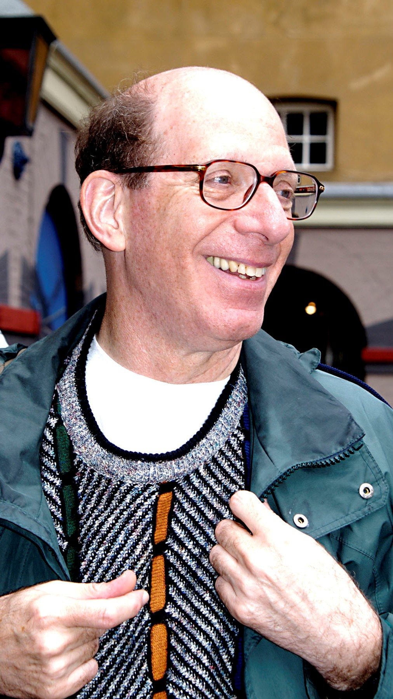

Alan Kay
Um dos inventores da orientação a objeto, também concebeu o laptop e a interface gráfica do utilizador.
Saiba Mais

Um dos inventores da orientação a objeto, também concebeu o laptop e a interface gráfica do utilizador.
Saiba Mais